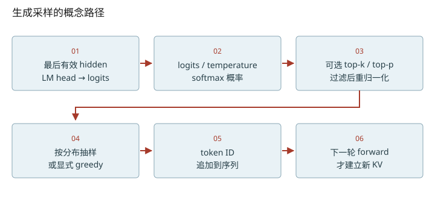
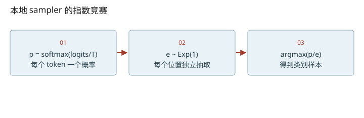

深入篇 23 / Transformer 逐步拆解 · 2026-11-08
从 logits 到 token：温度、过滤与随机性
区分 logits、概率、top-p 和随机采样，解释相同种子为什么还不足以保证批不变。
区分 logits、概率、top-p 和随机采样，解释相同种子为什么还不足以保证批不变。

温度改变概率，不改变词表
对 T>0，pᵢ=softmax(logits/T)ᵢ。T 小会放大相对分数差，分布更尖；T 大更平。减去同一常数不变，除以温度却会变。greedy 是选最大 logits 的单独策略；不能把 temperature=0 直接代入除法。本地 SamplingParams 对正温度有约束，sampler 也没有实现 T=0 的分支。
top-p 截取的是累计概率
把候选按概率降序排列，保留累计概率首次达到 p 的最短前缀，然后在保留集合内重新归一化。跨过阈值的那个 token 必须保留；p=1 保留整个分布。top-k 按候选数裁剪，与 top-p 的语义不同。交互仅演示算法，不能据此假设本地 nano-vllm 的参数接口支持过滤。
为什么概率除以随机数还能采样
本地 sampler 先算 p，再生成独立 Exp(1) 随机变量 e，取 argmax(p/e)。对正概率，eᵢ/pᵢ 是 rate=pᵢ 的指数变量；最先到达者为 i 的概率为 pᵢ/Σp，所以取 argmin(e/p) 就得到类别采样。源代码用 clamp_min 防止非常小随机值带来除零风险。这个推导解释分布，不意味着同一随机种子在不同 batch 布局下会给同一请求同一组随机数。
把随机数与数值路径分开排查
复现输出至少涉及：模型权重与输入、数值 kernel 路径、随机流怎样分给请求、采样参数与投机过程。batch composition 改变可能同时改变归约误差和随机数消费顺序。DeepInfer 的确定性配置会在32课按其 README 的约束讲解；别用“固定seed即可”掩盖这些前提。
把维度变化拆到每一步
- 先取每条请求最后一个有效hidden行，得到[B,H]。
- 再投到[B,Vocab]，采样输出[B]个token ID。

改变变量，验证直觉
启用 JavaScript 后可交互；上面的图和下面的手算练习始终可读。
数值练习：先算，再核对
概率已排序为 [0.55,0.30,0.10,0.05]，top-p=0.8。确定保留集合，并算重归一化后第一个 token 的概率。另用源码说明 temperature=0 应该怎样处理才不会除零。
闭卷检索
不要回看正文。答错后先解释原因，再重新打开这一课。
把结论落到源码
- 对照 sampler.py 三行运算，分别写出中间张量的 dtype 与形状。
- 检查 sampling_params.py 的 temperature 验证条件，区分 API 支持与概念说明。
以下行号由本地 vendor 文件生成；上游链接固定完整 commit，离线摘录可直接打开。
- nano-sampler：nanovllm/layers/sampler.py L5–12 · 上游证据
- nano-embedding：nanovllm/layers/embed_head.py L9–66 · 上游证据
优先阅读：本地 Sampler.forward；生成分布的输入来自原论文 §3.4 的 softmax 输出。
速查：形状与公式 · 三框架映射 · 术语表 · 复习与实战路线 · 4070 Ti本地实验
只在当前浏览器保存自评；不会自动写成已掌握的 learning record。